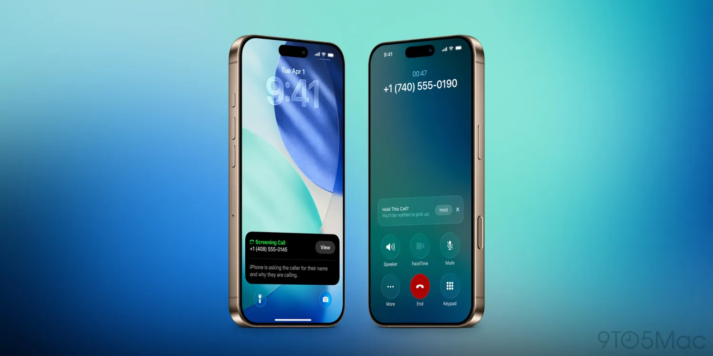

Breaking News
 May 27
May 27
by Casey Quinn
Apple released the first developer beta of iOS 26.6 alongside updates for macOS, iPadOS and watchOS, with reports suggesting the release focuses mainly on stability improvements.
Apple has officially released the first developer beta of iOS 26.6 for iPhone, arriving shortly after the public rollout of iOS 26.5 earlier in May. The new beta was made available alongside the first developer betas for iPadOS 26.6, macOS Tahoe 26.6, watchOS 26.6, tvOS 26.6 and visionOS 26.6, signaling the beginning of Apple’s next testing cycle across its software ecosystem. According to reports from MacRumors and 9to5Mac, registered developers can install the beta through the Settings app by navigating to General, Software Update and enabling beta updates linked to an Apple developer account. Apple released the software only two weeks after iOS 26.5 became publicly available, continuing its rapid update schedule ahead of the expected unveiling of iOS 27 at WWDC. The release immediately attracted attention because many users expected Apple to introduce additional refinements and bug fixes following iOS 26.5. However, early testers and technology publications reported difficulty identifying any major new features in the first beta build. Macworld pointed out that the update is “unusually quiet,” meaning Apple may be focusing more on stability, performance optimization and under-the-hood updates rather than showing off new features in the interface. Apple has yet to post detailed release notes, underscoring any major new capabilities inside iOS 26.6 beta 1. Early reports have indicated the update seems relatively small compared to earlier iOS 26 releases that included broader changes such as Liquid Glass design elements, Apple Intelligence enhancements and extended communication tools.
A major talking point around iOS 26.6 beta 1 is the apparent lack of any significant new features. Macworld noted that “good luck finding anything new” in the update, reflecting the difficulty many early testers faced while searching for visible interface changes or major functionality additions. Initial testing suggested that Apple may instead be concentrating on internal refinements, bug fixes and software stabilization. Technology publications noted that the company often uses later-cycle updates such as x.6 releases primarily to improve reliability and performance ahead of the next major operating system launch. Some observers pointed out that Apple appears heavily focused on iOS 27 development ahead of the upcoming Worldwide Developers Conference. Because of that shift in attention, analysts believe iOS 26.6 may become a relatively modest maintenance update rather than a feature-heavy release. Reports from MacRumors and Macworld both suggested that Apple is now approaching the final phase of the iOS 26 lifecycle. While no major additions have yet been identified, some users on developer forums and social media reported subtle improvements involving responsiveness, animation smoothness and background system behavior. Apple has not officially confirmed any such changes, though. Technology journalists also have noted that Apple sometimes includes hidden changes in early beta builds that only become apparent after more rigorous testing, so more features or refinements could emerge in the coming days as developers continue to pore over the software. There may be nothing visibly new, but developers and beta testers still care: even minor beta releases can contain vital security fixes, compatibility tweaks, and the seeds of features that will be rolled out in future versions of iOS.
Despite the apparently limited scope of iOS 26.6 beta 1 itself, it continues development of the broader iOS 26 platform that Apple introduced in 2025. iOS 26 represented one of Apple’s most significant visual redesigns in years with the introduction of the Liquid Glass interface, which brought translucent design elements, improved animations, and new customization options throughout the operating system. Apple also expanded Apple Intelligence features throughout iOS 26, including Live Translation tools in Messages, FaceTime and Phone, along with smarter communication features and more advanced image generation capabilities. The company described the operating system as more “helpful” and deeply integrated with artificial intelligence services across the iPhone ecosystem. Other major iOS 26 additions included redesigned lock screen customization, new 3D photo effects, enhanced spam and call screening tools and updates to Messages such as polls and conversation backgrounds. Apple also introduced improvements to CarPlay and communication management systems aimed at reducing distractions. More refinements came earlier in 2026 with iOS 26 updates. Reports indicated that iOS 26.4 brought changes to Apple Music, Podcasts and CarPlay, while iOS 26.5 added new wallpapers and regulatory tweaks affecting third-party smartwatches and headphones in the European Union. Against that background, iOS 26.6 appears more focused on preparing the platform for long-term stability rather than dramatically expanding functionality. Analysts suggested Apple is likely prioritizing performance improvements and reliability as the company prepares to transition developer attention toward iOS 27 later this year.
The release of iOS 26.6 beta 1 comes just weeks before Apple’s annual WWDC conference, where the company is expected to preview iOS 27 and the next generation of Apple software platforms. As a result, many developers and users believe Apple’s engineering focus has already shifted heavily toward the upcoming operating system rather than introducing major additions inside iOS 26. Reports from 9to5Mac and MacRumors suggested that iOS 26.6 may primarily serve as a bridge update designed to maintain software stability until iOS 27 enters public beta testing later this year. Apple historically continues releasing maintenance updates during this transitional period to address security vulnerabilities, improve performance and support newer hardware.
Developers are also closely monitoring the beta for hidden references to future Apple products and software features. Apple sometimes includes background code changes in late-cycle iOS releases that hint at upcoming hardware, artificial intelligence functions or system capabilities scheduled for future launches. For now, however, early reactions suggest iOS 26.6 beta 1 is one of the quieter Apple beta releases in recent memory. Technology writers noted that users hoping for dramatic new capabilities may need to wait for iOS 27 announcements instead. Even so, Apple’s beta ecosystem remains highly active, with developers continuing to test updates across iPhone, iPad, Mac, Apple Watch and Vision Pro devices. The company encouraged developers through the Apple Beta Software Program to continue testing and providing feedback to help shape future releases.

Casey Quinn is a U.S. technology reporter covering innovation, digital policy, and emerging trends in the tech industry.